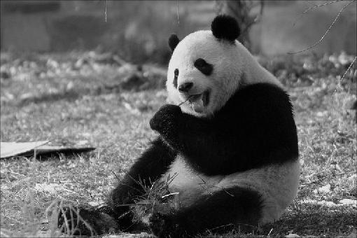
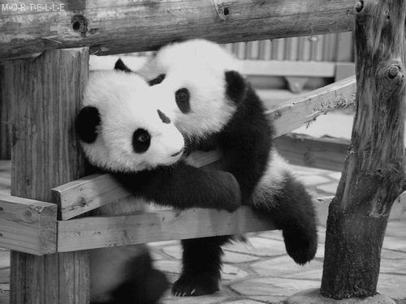
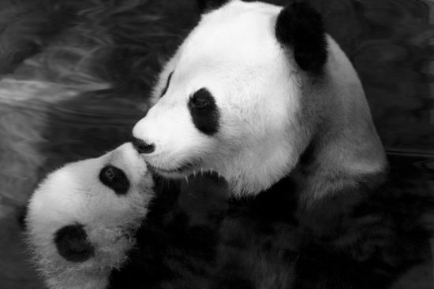

x

x

x
Fue en China en el año 1869. Hasta su descubrimiento, este curioso animalito había vivido muy tranquilo y contento en los bosques de China, alimentándose de bambú
y sin que nada ni nadie lo molestara. El primer oso panda cautivo fue trasladado a Occidente en 1937, en donde causó sensación por sus rasgos tan bonitos y su expresión de ternura.
El panda tiene la cara pequeña, una combinación de colores muy original (blanco y negro); sus orejas semejan las de un oso y las mueve cuando está masticando. Por cierto que se sienta
y come de forma casi humana.
No es sólo debido a la cada vez mayor pérdida de su hábitat ni a los cazadores furtivos que el panda gigante tiende a desaparecer. Es también un problema evolutivo. La evolución está dejando
atrás a uno de los animales más populares del mundo, una especie en grave peligro de extinción de la que se estima hay sólo unos mil especímenes en estado salvaje. Las hembras viven aisladas
de los machos en los espesos bosques de bambú de China.
China hizo grandes esfuerzos para salvar al panda gigante de la extinción, se crearon 32 reservas para proteger a los pandas salvajes y se instituyó un programa de cría en cautiverio.